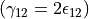
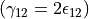
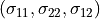
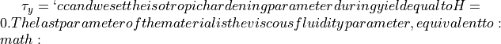
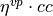

2.2. Viscoplastity Application 2:¶
In this application we will compare the shear strain response of the viscoplastic layer under relaxation conditions. One important characteristic of viscoplasticity is the observed relaxation response of the material after an initial constant displacement is applied. Because the initial displaceent is applied imeediately at the begininge the initial responce of the elasto-viscoplastic Perzyna material is elastic. As time passes, however, the loading rate is zero and the material will decrease its yield limit progressively until it reaches the rate independent limit. Since the stress state of the material lies at yield, the formula relating the stress rate to the visoplastic strain rate is valid:
We will perfoem a relaxation analysis withing the framework of Numerical Geolab, using the Cauchy elasto-viscoplastic Von-Mises Perzyna material. The finite element formulation and the finite problem used are given below.
The file for this tutorial can be found in:
ngeoFE_unittests.Mechanics.Cauchy.TwoD.BVP.Cauchy2D_Von_Mises_Perzyna_App_2
We provide here the description of the input file for the relaxation analysis and explain the basic steps.
2.2.1. Begining of file¶
The file begins as follows:
from dolfin import *
import time
import numpy as np
from ngeoFE.feproblem import UserFEproblem, General_FEproblem_properties
from ngeoFE.fedefinitions import FEformulation
from ngeoFE_unittests import ngeo_parameters
from ngeoFE_unittests import plotting_params
import os # allows for easier handling of paths
from _operator import itemgetter # allows for transformation of lists to iterables, usefull for the definition of boundary conditions
2.2.2. Finite element formulation¶
We do this by specifying the number of vector components for the test function, the interpolation function used inside the element and the number Gauss points present in the element for the integral evaluation of the weak form.
class Cauchy2DFEformulation(FEformulation):
'''
Defines a user FE formulation
'''
def __init__(self):
# Number of stress/deformation components
self.p_nstr=3
# Number of Gauss points
self.ns=1
def generalized_epsilon(self,v):
"""
Set user's generalized deformation vector
"""
gde=[
Dx(v[0],0), #gamma_11
Dx(v[1],1), #gamma_11
Dx(v[0],1)+Dx(v[1],0) #gamma_12
]
return as_vector(gde)
def create_element(self,cell):
"""
Set desired element
"""
# Defines a Lagrangian FE of degree 1 for the displacements
element_disp=VectorElement("Lagrange",cell,degree=1,dim=2)
return element_disp
 used for the equilibrium equations are needed.
We note also that we provide the Voigt notation for the unknown strains of the problem, therefore, the engineering strain notation for the shear strain needs to be used .
used for the equilibrium equations are needed.
We note also that we provide the Voigt notation for the unknown strains of the problem, therefore, the engineering strain notation for the shear strain needs to be used .In code snippet above, we provide the finite element formulation for the problem at hand. The class is initialized with 3 strain components and 1 Gauss point. The python function:
- generalized_epsilon(v)¶
- create_element(cell)¶
We note here that the VectorElelement() class indicates that the components of the function space for each vector component are the same.
2.2.2.1. Boundary identification¶
We proceed now by identifying the boundaries needed for the application of the boundary conditions at a later stage of the modeling procedure. We make use of the SubDomain() parent class inside dolfin:
- class SuDomain(x, on_boundary)¶
We create four subclasses (children) of the class, each for each side of the rectangular domain, which inherit from it the spatial variable (x) and the boundary identification flag (on_boundary) and the method
- inside(x, on_boundary)¶
The subclasses are defined as follows:
class left(SubDomain):
def inside(self,x,on_boundary):
return x[0] < 0 and on_boundary
class right(SubDomain):
def inside(self, x, on_boundary):
return x[0] > 0 and on_boundary
class top(SubDomain):
def inside(self,x,on_boundary):
return x[1] > 0 and on_boundary
class bottom(SubDomain):
def inside(self, x, on_boundary):
return x[1] < 0 and on_boundary
Inside each subclass we define the logical test for assigning the specific boundary node in one of the boundary regions, where the boundary conditions will be applied.
The value x[i] indicates the spatial coordinate  of the problem at hand.
of the problem at hand.
2.2.2.2. Monitoring stress and state variables at the Gauss points¶
In this application we will present a way to extract state variable quantities from the Gauss points of the Finite element model. This is done again by application of the SubDomain() class in order to define a region, in which the Gauss points are monitored. The following codeb defines a rectangular region near the free surface of the layer:
class Gauss_point_Querry(SubDomain):
def inside(self, x, on_boundary):
h=1.0 #layer's height
w=0.2 #layer's width
nh=80 # number of left aligned subsections of the Rectangle mesh boundary defined later.
return x[0] >= h/2.-1./nh. and between(x[1], (-w/2., w/2.))
Gauss points are present.
2.2.2.3. Finite element problem description¶
We proceed now with building the main Finite element model, corresponding to shearing in 2D of a Cauchy elastoplastic layer with a Von Mises yield criterion and strain hardening. The finite element model is built inside a child class that inherits its methods from the parentclass UserFEproblem(). We will provide here commentary for each method used inside the childclass Cauchy2DFEproblem(UserFEproblem).
class Cauchy2DFEproblem(UserFEproblem):
"""
Defines a user FE problem for given FE formulation
"""
def __init__(self,FEformulation):
self.description="Example of 2D plane strain problem, Cauchy continuum"
self.problem_step=0
self.h = 1.
self.w = 0.2
super().__init__(FEformulation)
In the class __init__() method, the finite element formulation defined above is provided as argument.The geometric dimensions of the problem are also specified Its height self.h=1. and its width self.w=0.2 . The initialization then proceeds to set up all the methods of the parentclass UserFEproblem(). The methods inside the class are defined by overriding the methods inside the parent class.
def set_general_properties(self):
"""
Set here all the parameters of the problem, except material properties
"""
self.genprops=General_FEproblem_properties()
# Number of state variables
self.genprops.p_nsvars=38
This method is used to provide the number of state variables of the material. In this tutorial only the mechanical behavior is important and therefore, the state of material is described by the increment of stress, total strain, elastic strain, plastic strain, plastic strain multiplier and plastic strain rate. Notice that even though the problem is in 2D and three strain components (and consequently three stress components) are needed for the description of equilibrium the state of the material contains the information also for the rest components of the general 3D problem. For each material used by the Numerical Geolab, the number of state variable components is given in Table (To be referenced).
For this simple geometry the capabilities of dolfin can be used to define a rectangular mesh specifying the bottom left and upper right corners of the rectangular domain.
def create_mesh(self):
"""
Set mesh and subdomains
"""
# Generate mesh
h=self.h
w=self.w
nx=80
ny=1
mesh = RectangleMesh(Point(-h/2.,-w/2.),Point(h/2.,w/2.),nx,ny,"left")#"crossed")
#print(mesh.topology().dim())
cd=MeshFunction("size_t", mesh, mesh.topology().dim())
fd=MeshFunction("size_t", mesh, mesh.topology().dim()-1)
return mesh,cd,fd
For the domain at hand we specify a discretization with nx=80 elements along the x[0] component and ny=1 element along the x[1] component. The MeshFunction() method of dolfin is used to provide the mesh object, the interior domain and the boundary domains. The following model is the produced:
Fig. 2.2.1 Image of the rectangular mesh produced by RectangleMesh(). The domain was exported with the help of the third party software Paravew.¶
We next assign values to the regions of the mesh defined by different material properties.
def create_subdomains(self,mesh):
"""
Create subdomains by marking regions
"""
subdomains = MeshFunction("size_t", mesh, mesh.topology().dim())
subdomains.set_all(0) #assigns material/props number 0 everywhere
return subdomains
In this tutorial all the domain is defined by the same material properties and therfore the value 0 will be assigned everywhere inside the mesh. This value is a number indicating which material parameters need to be taken into account in each mesh region (see the corresponding method set_material_params()).
We need also to initialize the Gauss point monitoring subdomain, when state variable output is needed. We use the same method as in the case of material definition based onthe FEniCs software:
def create_Gauss_point_querry_domain(self,mesh):
"""
Create subdomains by marking regions
"""
GaussDomain = MeshFunction("size_t", mesh, mesh.topology().dim())
GaussDomain.set_all(0) #assigns Gauss region number 0 everywhere
GaussDomainQuerry= Gauss_point_Querry()
GaussDomainQuerry.mark(GaussDomain,1) # marks the Gauss region be applying the number 1 at the selected nodes.
return GaussDomain
We note here that the Gauss point definition is done on the cells of the Finite Element mesh and not on the boundary facets. This is done because the Gauss points are on the
interior of the domain and use of the nodal selection algorithm inside the Numerical Geolab module ngeoFE.feproblem
(see method ngeoFE.feproblem.UserFEobject.set_history_output_indices())
returns an empty set. The method ngeoFE.feproblem.UserFEobject.set_svars_history_output_indices() needs to be called -internally- instead.
We do so by assigning the numbers 1 to 4 to the different regions of the model. To do this we use the method mark() from the SubDomain() class of dolfin.
def mark_boundaries(self,boundaries):
"""
Mark left and right boundary points
"""
boundaries.set_all(0)
left0=left()
left0.mark(boundaries,1)
right0=right()
right0.mark(boundaries,2)
top0=top()
top0.mark(boundaries,3)
bottom0=bottom()
bottom0.mark(boundaries,4)
return
2.2.2.3.1. Assigning boundary conditions¶
We are now able to identify the boundaries of the mesh and assign different boundary condition to each side of the boundary. The way we apply the boundary conditions can be seen in the method:
- set_bcs()¶
def set_bcs(self):
"""
Set boundary conditions for the user problem / could be replaced by external mesher, e.g. Abaqus, Gmsh...
"""
if self.problem_step == 0:
bcs=[
[2,[2, [1],1.0]],
[1,[0, [1],0]],
[4,[0, [0],0]],
[3,[0, [0],0]]
]
elif self.problem_step != 0:
bcs=[
[2,[2, [1],0.0]],
[1,[0, [1],0]],
[4,[0, [0],0.0]],
[3,[0, [0],0.0]]
]
return bcs
Inside this method the boundaries are assigned with the use of a nested list. Dirichlet, Neuman and Robin boundary conditions can be applied both incrementaly and instantaneously. The boundary conditions can be assigned to a boundary region or pointwise.
In this example, the region id ranges from 1 to 4 indicating the left, right,top and bottom regions of the boundaries. The type of boundary condition for the left boundary is set to 2, specifying instantaneous Dirichlet boundary condition. The vector component shows which component of the 2D displacement vector is to be affected and value indicates the value of the boundary condition to be set at the specific boundary. Here, we set at the left boundary (label 2), the value of the instantaneous Dirichlet condition (type 2), for the vertical displacement component v[1] (parallel to x[1]) equal to 1.0.
2.2.2.3.2. Assigning the history output¶
Numerical Geolab offers the user the capability of extracting the output at the nodes and regions of the boundary at the converged increments of the numerical analysis. This capability is given to the user in order to obtain the specific nodal output of the solution (forces, displacements) instead of using the interpolated results provided in a separate .vtk file for postprocessing with a third party software (e.g. Paraview). The history output at the nodes can be given by:
def history_output(self):
"""
Used to get output of residual at selected node
"""
hist=[[2,[1,[1]]],
[2,[0,[1]]],
]
return hist
The node specification works the same way as in set_bcs(). In this example we choose the right edge of the boundary (2) in order to monitor the second component ([1]) of the force (1) and displacement (0) fields respectively.
2.2.2.3.3. Assigning the state variable history output at the Gauss points¶
We assign next the components of the state variables that need to be monitored at the specific Gauss points
def history_svars_output(self):
"""
Used to get output of svars at selected Gauss point
"""
hist_svars=[[1,[1,[21]]]] #Calculate elastoviscoplastic shear strain increment
return hist_svars
The Gauss point specification works the same way as in set_bcs() and history_output(). In this example in the region (1) defined by the
method create_Gauss_point_querry_domain(), we choose to monitor the vector component 21, which translates
to the elasto-visco-plastic multiplier  . The mapping between VectorSpace and state variable components is given in the state variables material description
(see reference needed).
. The mapping between VectorSpace and state variable components is given in the state variables material description
(see reference needed).
2.2.2.4. Material specification¶
Next, we define the analysis material that we have already assigned in the create_subdomains() method.
def set_materials(self):
"""
Create material objects and set material parameters
"""
mats=[]
# load material #1
env_lib=ngeo_parameters.env_lib
umat_lib_path= ngeo_parameters.umat_lib_path
umat_lib = umat_lib_path+'/CAUCHY3D-DP/libplast_Cauchy3D-DP.so'
umat_id=2 # if many materials exist in the same library
mat=UserMaterial(env_lib,umat_lib,umat_id)
mat.props=self.set_material_1_properties(2000.,0.,100.,0.,1.)
#
mats.append(mat)
return mats
The ngeoFE_unittests.ngeo_parameters module contains the relative path to the materials libraries, which specify the different materials available to the user.
The variable umat_id=2 needs to be set for the 2D analyses performed here.
It specifies the mapping of the updated vector components of the strain increment and corresponding tensor components of the constitutive matrix , with their position in the 3D strain vector and 3D constitutive matrix provided at the material subroutine (material algorithm).
This mapping returns back the correct components of the stress vector and constitutive matrix to pass into the residual calculation of the weak form the UFL form language interprets inside the dolfin software,
at each equilibrium iteration. The material properties passed into the material algorithm, are set with the helper method:
def set_material_1_properties(self,EE,nu,cc,H,eta_vp):
"""
Sets material parameters
"""
GG=EE/(2.*(1.+nu)) #Shear modulus
KK=EE*GG/(3.*(3.*GG-EE)) #Isotropic compression modulus
props=np.zeros(19)
props[1-1]=KK
props[2-1]=GG
props[12-1]=cc
props[15-1]=H
props[19-1]=eta_vp*cc
props=props.astype("double")
return props
We specify the material’s elastic parameters using the material young modulus EE and Poisson ratio nu, however, the material description numerical geolab employs, makes use of the isotropic compression modulus KK and the shear modulus GG. Therefore, a transformation of the elastic constants is needed. The material used in this application is elastic visco plastic with a viscous fuidity parameter (Perzyna viscoplasticity). We specify the material yield strength in simple shear eta^{vp}=0.01`.
The elastic constants (GG, KK) used together with the material hardening parameter, H, and the viscosity parameter 
and their position in the material properties (numpy array props), can be found in Table (reference needed) and the material library files that accompany Numerical Geolab.
Our model is now set and ready to run. In this application we will perform a relaxation analysis in order to test the effect of the shearing rate in the post yielding behavior of the material. Using the class Cauchy2DFEproblem(UserFEproblem) we will create a finite element proble object (myFEproblem). In order to fascilitate the analysis we will add a set of methods to the Cauchy2DFEproblem(UserFEproblem) class. These methods will provide the parameters of the solution procedure including the analysis total time and a set of plotting and postprocessing tools.
2.2.2.5. Controling the analysis time¶
The following code block provides the solver parameters inclusing the step total analysis time, the maximum time increment, the tolerance of the converged increment and the maximum number of increments.
def give_me_solver_params(self,scale_t=1.):
self.scale_t = scale_t
self.slv.incmodulo = 1
self.slv.dtmax=0.1*self.scale_t
self.slv.tmax=1.*scale_t
ninc=int(self.slv.tmax/self.slv.dtmax)
self.slv.nincmax=1000000
self.slv.convergence_tol=10**-6
self.slv.removezerolines=False
The parameter py:param:scale_t controls the overall time increment and total time of the analysis. We specify it as an attribute of the calss so that it can be called by the other analysis procedure method. To avoid confusion with the problem description we choose not to incorporate it as an argument to be passed at the level of the problem definition. Next, the main part of the analysis follows. This method specifies the boundary conditions to be applied at each step of the analysis and the total time of eaxh analysis step.
def run_analysis_procedure(self,reference_data_path):
saveto=reference_data_path+"./Cauchy_2D_Von_Mises_test_step_0_App_2_vp.xdmf"
self.problem_step = 0
self.bcs=self.set_bcs()
self.feobj.symbolic_bcs = sorted(self.bcs, key=itemgetter(1))
print("initial")
converged=self.solve(saveto,summary=True)
scale_t_program = [self.scale_t,self.scale_t,self.scale_t,self.scale_t,self.scale_t]
print("shearing1")
nsteps=5 #number of subsequent shearing steps.
for i in range(nsteps):
self.problem_step = i+1
scale_t = scale_t_program[i]
self.slv.nincmax=1000000
self.slv.dtmax=0.1*scale_t
self.slv.dt=self.slv.dtmax
self.slv.tmax=self.slv.tmax+1.*scale_t
self.feobj.symbolic_bcs = sorted(self.set_bcs(), key = itemgetter(1)) # Provide the list of boundary conditions
self.feobj.initBCs() #The new boundary conditions need to be initialised
filename = 'Cauchy_2D_Von_Mises_test_step_'+str(i+1)+'_App_2_vp'
saveto= reference_data_path+filename+".xdmf"
converged=self.solve(saveto,summary=True)
return converged
We note that in the above code the internal loop indicates that that analysis consists of five different steps. The maximum number of increments for each step is set to ninc=100000.
2.2.2.6. Postprocessing the results¶
Next, we focus on extracting the results from the history matrices stored during the analysis. The methods of history_unpack() and svars_history_unpack() help us unpack the nesed lists of the boundary nodal quantities and the state variables at the quadrature points respectively. In this examples the structure of the nodal history list and that of the history list at the quadrature points is the same. The history list is a nested list, whose elements have the following structure:
|[[time, [force node 1, force node 2], [displacement node 1, displacement node2]], |… |,[[time, [force node 1, force node 2], [displacement node 1, displacement node2]]]
def history_unpack(self,list1):
for i,elem in enumerate(list1):
if i==0:
self.array_time=np.array([[elem[0]]])
self.array_force=elem[1].reshape((1,len(elem[1])))
self.array_disp=elem[2].reshape((1,len(elem[2])))
continue
self.array_time=np.concatenate((self.array_time.copy(),np.array([[elem[0]]])))
self.array_force=np.concatenate((self.array_force.copy(),elem[1].reshape((1,len(elem[1])))))
self.array_disp=np.concatenate((self.array_disp.copy(),elem[2].reshape((1,len(elem[2])))))
def svars_history_unpack(self,list1):
for i,elem in enumerate(list1):
if i==0:
self.array_dtime=np.array([[elem[0]]])
self.array_gp_svars_comp=elem[1].reshape((1,len(elem[1])))
continue
self.array_dtime=np.concatenate((self.array_dtime.copy(),np.array([[elem[0]]])))
self.array_gp_svars_comp=np.concatenate((self.array_gp_svars_comp.copy(),elem[1].reshape((1,len(elem[1])))))
The extraction functions that return the numpy arrays of the nodal and state variable quantities at the monitored regions are the following:
- extract_force_disp(self)¶
- extract_svars_gauss_point(self)¶
The first method extracts the nodal displacement at the end nodes, and the stress tensor at the boundary of the domain.
def extract_force_disp(self):
analysis_history=self.feobj.problem_history
self.history_unpack(analysis_history)
self.array_time=self.array_time[:].copy()
self.array_force=self.array_force[:].copy().sum(axis=1)/self.w
self.array_force=self.array_force.reshape((-1,1))
self.array_disp=self.array_disp[:,1].reshape((-1,1)).copy()
The second method extracts the state variable component from the gauss points in question.
def extract_svars_gauss_point(self):
analysis_svars_history=self.feobj.problem_svars_history
self.svars_history_unpack(analysis_svars_history)
self.array_dtime=self.array_dtime[:].copy()
self.array_gp_svars_comp=self.array_gp_svars_comp[:].copy()
2.2.2.7. Application of analysis procedure and postprocessing of numerical results¶
The following code block performs the analyses of the two numerical models and the postprocessing of the results.
#model 1 run analysis procedure
my_FEproblem1=Cauchy2DFEproblem(cls.my_FEformulation)
my_FEproblem1.give_me_solver_params(scale_t=10e-2)
converged1=my_FEproblem1.run_analysis_procedure(reference_data_path)
After the analysis has finished we perform extraction of the results
self.my_FEproblem1.extract_force_disp()
values_time1 = self.my_FEproblem1.array_time
values_force1 = self.my_FEproblem1.array_force
values_disp1 = self.my_FEproblem1.array_disp
The values of plastic strain rate, the material parameters at the yield strength at the Gauss points are also retrived via the method
extract_svars_gauss_point():
self.my_FEproblem1.extract_force_disp()
self.my_FEproblem1.extract_svars_gauss_point()
gamma_dot_vp_1=np.divide(self.my_FEproblem1.array_gp_svars_comp,self.my_FEproblem1.array_dtime)
cc=self.my_FEproblem1.mats[-1].props[11]
etavp=self.my_FEproblem1.mats[-1].props[18]/cc
tau_yield_anal_1=cc+etavp*cc*gamma_dot_vp_1 #evolution of elastovisoplastic strength during shearing
2.2.2.8. Plotting the analysis values¶
We will plot the shear stress values at the free surface of the layer with respect to time, for the two cases os slow and fast shear.
To do so we take advantage of the plotting capabilities of Numerical Geolab available in ngeoFE_unittests.plotting_params.
x1=list(values_time1[:].copy())
y1=list(-values_force1[:].copy())
x1.insert(0,0)
y1.insert(0,0)
fig, ax1, color1 = plotting_params.object_plot_axes('$t$ [s]', y1_txt='$\sigma$ [MPa]',color1='',y2_txt='',color2='', title='',mode='1')
plotting_params.object_plot(x1, y1,' y2', ax1, 'ax2', mode='1',color1=color1,color2='',label_string='')
plotting_params.show_plot()
plotting_params.plot_legends(ngeo_parameters.reference_data_path, fig, filename='Cauchy_3D_Perzyna_visoplasticity_App_2_sigma_t',mode='1')
The comparative results of stress displacement for the two models of uniform shear are shown in Figure
Fig. 2.2.2 Relaxation diagram (shear stress |
Fig. 2.2.3 2D elasto visco-plastic Cauchy layer under uniform shear (image produced with the help of third party software Paraview).¶ |
 [MPa], time
[MPa], time  [s]) at the free end of the layer. Initially due to the immediate strain, the material response is elastic.
At the later stages of the analysis the material strength tends to the rate independent yield limit.
[s]) at the free end of the layer. Initially due to the immediate strain, the material response is elastic.
At the later stages of the analysis the material strength tends to the rate independent yield limit.{kind=link}
{kind=link}
{kind=link}